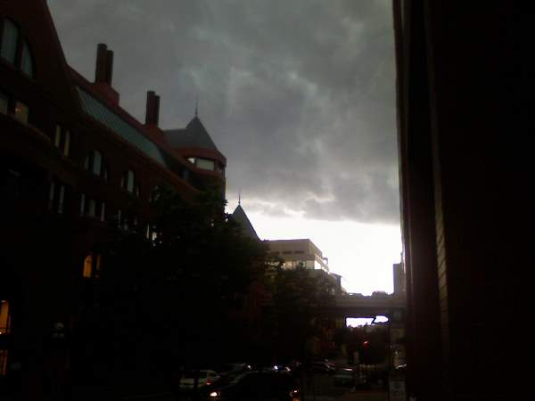
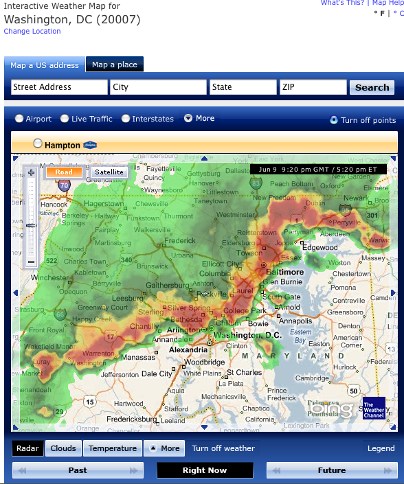

Astronaut In Bathroom
Painting by Scott Listfield who owns the awesome domain astronautdinosaur.com.
(via BOOOOOOOM)

Painting by Scott Listfield who owns the awesome domain astronautdinosaur.com.
(via BOOOOOOOM)
Today was filled with interesting quotes from my daily information grazing. Below are a smattering of what I found as well as links back to the full source for your reading pleasure.
“Why is every browser logo round?” – I never realized this until Download Squad brought it up. I know the Google Chrome logo isn’t all that original.
“In other words, inebriated subjects report less mind wandering only because they are less aware of their own minds.” – From a Discovery Magazine article about why we stop paying attention and zone out.
“BlackBerrys have become like cartoon thought bubbles.” – NYTimes article about how smartphones are replacing our manners.
“The winning words in 1950’s spelling bee: psychiatry, condominium; 2000’s: succedaneum, appoggiatura!” – From a presentation given by Neil Howe, a generational expert with a focus on demographics and culture, who spoke to the Pew Research Center staff this morning. Spellingbee.com has a complete list of National Spelling Bee champions and winning words since 1925.
Today has been an interesting weather day. I was awoken at 6am by one loud thunderclap followed by several long, low rumbles. Everything was fine on my way into work and the sun even came out during the day. But near the end of the day, I looked out the window and saw it was ominously dark. So naturally I decided to venture outside and take some pictures on my phone.

You can see how strong these storms were by looking at the radar. So I decided to hunker down at work until the thunder died down.

Of course the Metro was all kinds of backed up. Go figure. Hopefully tomorrow will be less stormy.
When you have a popular site that revolves around games that need dice rolled, a pseudo-random number generator just isn’t going to cut it. Computers have a hard time doing random things, which is why you have to fake it. GamesByEmail.com uses some 80,000+ dice rolls for its users and when they started complaining about the not-so-random dice rolls, the only thing to do was generate a machine that could do the real thing called the dice-o-matic.
The dice-o-matic is a 7 foot tall conveyor belt capable of rolling the 200 dice in the machine four times a minute, totaling over 1,330,000 rolls a day. A camera processes the row of dice at the top of the conveyor belt before they are dropped onto a twisty ramp where they roll all the way down again.
It’s an interesting project for such a seemingly simple task of rolling a die.
I discovered yooouuutuuube.com this past Sunday which plays every frame of a YouTube video individually in a fullscreen wall of video. It’s a little hard to explain, so take a gander to see what I mean. This Alice in Wonderland Mashup makes a perfect example.
Speaking of the mashup, the song is so good. It’s an electronic piece of which 90% is composed using sounds recorded from the Disney film ‘Alice In Wonderland’. The creator was nice enough to share a free MP3 download of the song which has gained over 2 million views on YouTube. I must have listened to the song 100 times since Sunday! It reminds me of Singin’ In The Rain by Mint Royale which was featured in a sweet VW car commercial.
(via Booooooom)
Advertising that uses an algorithm to determine what is relevant to the content can have it’s interesting side-effects. Take these three screenshots I have collected over the past couple of months for example.

Who would want a dying cat ringtone anyway? Plus how did Google know that Puck was lying down playing dead?

Note: The election happened on November 4th, nearly 3 months earlier.

A post about the release of Firefox 3 seems like a good place to advertise Firefox 2.
Have you ever waned to turn your fridge into a graphic designers computer screen? These $25 magnet kits from meninos.us will transform any plain, metallic surface into an industry-standard graphics app. There’s a kit with Adobe Photoshop panels and a kit with Adobe Illustrator panels so no graphic designer will feel left out. Because if you spend most of your day in front of the interface, getting up for a quick snack might seem a little confusing without the familiar screen.
This reminds me of my first, and only, drawing class in college. I’m not much of a physical media guy so when I made a mistake on my sketch pad I immediately made a gesture to undo. It took me a second to realize I wasn’t in front of Photoshop. I suppose these magnets wouldn’t help, but that’s besides the point.
(via s2999.com)
Grocery shopping got a little bit smarter and a whole lot more fun at a nearby Giant. After a day of errands at Arundel Mills mall, Kristina and I stopped at the Giant off of New Hampshire Ave. This store has the Scan It gun which lets shoppers bag their groceries and calculate their total as they shop. We didn’t see a lot of people using them but we found it easy to use and quite handy.
When you first walk in to the store you see this…

This is where you scan your bonus card, pick up a Scan It gun, and grab some plastic bags to fill while you shop. Before you put an item in your cart you simply hold the yellow button down and scan the barcode with the gun. It shows you the price of the item and adds it to your total. Removing an item is as simple as selecting Remove and then scanning the item again.

Scanning fruits and vegetables is a little tricky since they don’t have barcodes on them. There are produce scales around to select and weigh your produce and then a printer prints out a barcode sticker which you can scan.

At the end of your trip you scan a special barcode at the register and hand the scanner to the cashier. Then you just pay and off you go!
The only negative aspect of the process is the Scan It device displays specials with a loud cash register sound every so often. Most of the specials weren’t relevant to what we were shopping for. The brochure says “there are extra savings exclusively with SCAN IT!” but I didn’t notice anything. Kristina and I shop with a list which means we tend to ignore anything that isn’t on it.

Technology like this is a good stop gap until RFID technology overtakes the old fashioned barcode. I think within the next 10 years, there will be a console on every grocery cart that tracks what items go into the cart as well as helping shoppers identify where things are located. Having more information while I shop is a welcome improvement. This eliminates any confusion about pricing and helps us stay within our grocery budget. Now there will be no more surprises at the checkout.
I hope this technology makes it to the Giant where we usually shop at, though we might just go a little bit further to this Giant for our weekly grocery trips.
Have you ever needed a diabolical central command console like the bad guys always use in the movies? Then Henchman’s Helper will be a big help to you.
While it may look like something out of a sci-fi novel, this site is actually useful. All the images are from live web cams all over the world or animated weather maps which are brought in dynamically using JavaScript. It’s the perfect site to leave open on a second monitor so you can check in with unsuspecting victims at a glance. Now if only we had a direct line to the presidents office to demand a ransom of $100 billion dollars!
P.S. Nice touch with the laser knob.
This tackle was nuts. The Ravens player needed to be carted off the field in a stretcher. In other news it looks like the Steelers and Cardinals will be in the Super Bowl.